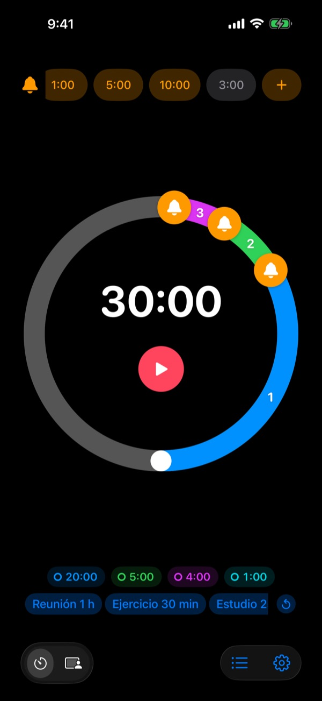
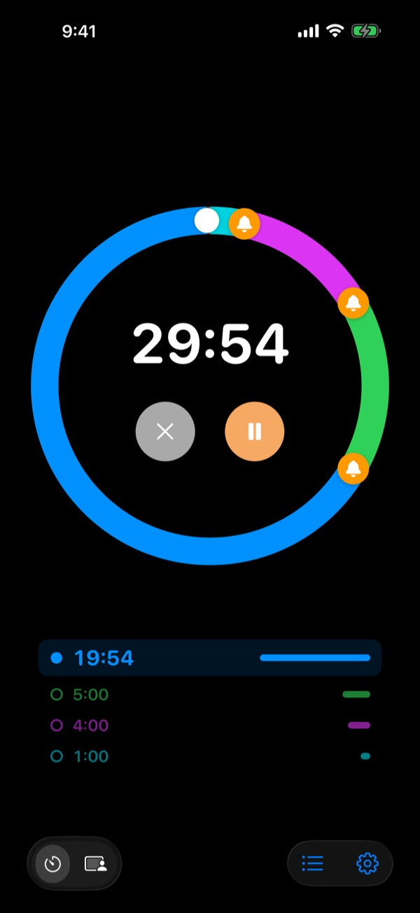
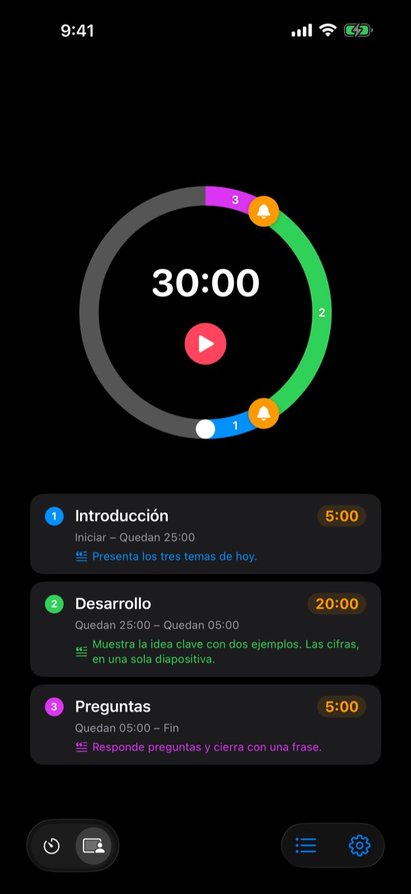
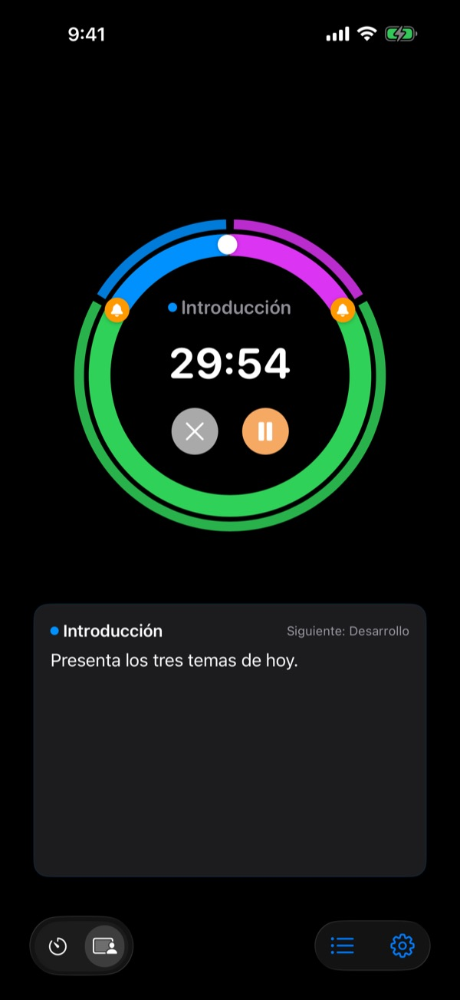

No cuando ya terminó,
sino antes
5 minutos antes de que acabe la charla, 3 antes de cerrar la reunión. Rereminder te avisa en cada momento que elijas, así no tienes que mirar el reloj a cada rato.
Los avisos previos son gratis y sin límite. Para iPhone, Apple Watch y Mac.

Pruébalo aquí mismo
Elige una duración y tus avisos, y pulsa el botón rojo. Un minuto pasa en un segundo y oirás cada aviso cuando le toque.
¿Te ha sonado alguna vez el temporizador cuando ya era tarde?
Un temporizador normal solo suena en cero. La charla se acaba antes de llegar a la conclusión, la clase termina sin repaso y la reunión se come la siguiente sin decidir nada. Lo que necesitas no es un aviso de que se acabó, sino uno cuando todavía hay tiempo para cerrar bien.
Avisos antes del final, todos los que quieras
Arrastra las campanas del dial a 10, 5 o 1 minuto antes del final, o a donde prefieras. No hay límite, y cada aviso puede llevar su propio mensaje, como «Cierra las diapositivas».
Con la pantalla apagada, el tiempo restante sigue a la vista en la pantalla bloqueada y en la Dynamic Island, y el Apple Watch te da un toque en la muñeca.

Divide tu charla en partes
Introducción 5 minutos, desarrollo 20, preguntas 5. Ponle a cada parte un nombre y un guion. Cada vez que cambia de parte te avisa con su nombre, y el reparto del tiempo se cumple casi solo. (Pro)

Lo que toca decir, en pantalla
Mientras avanza, ves en grande el guion de la parte actual y la siguiente. Si pasas de cero, sigue contando para que sepas cuánto te has pasado. (Pro)

Empieza en tres pasos
- 1
Ajusta el tiempo
Gira el dial o toca la hora y escríbela. Una vuelta son 60 minutos; dos, 120.
- 2
Coloca los avisos
Toca una etiqueta como 1:00 o 5:00 arriba, o arrastra una campana al dial.
- 3
Inicia y olvídate
Bloquea el iPhone. El iPhone y el Apple Watch te avisan en cada momento que fijaste.
Los ajustes más usados
- Charla de 20 minutos
- 5 min antes «Pasa a la conclusión», 1 min antes «Despídete»
- Clase de 50 minutos
- 10 min antes «Explica los deberes», 3 min antes «Repaso»
- Reunión de 30 minutos
- 5 min antes «Repasa los acuerdos»
- Sesión de pilates o yoga
- Modo sesión, una parte por secuencia (Pro)
- Estudio de 25 minutos
- 5 min antes y luego descanso
- Descanso de 3 minutos entre series
- 30 s antes «Prepárate para la siguiente»
- Mentoría de una hora
- 15 y 5 min antes
Guarda como plantilla lo que repites y ábrelo con un toque (desde Memoria). También puedes iniciar o detener un temporizador con Atajos y Siri.
Los avisos previos son gratis. Paga solo si quieres que recuerde.
Gratis
- Avisos previos sin límite
- Tu propio mensaje en cada aviso
- Actividad en vivo en la pantalla bloqueada y en la Dynamic Island
- Seguir avisando hasta que respondas y terminar con una alarma completa
- App para Apple Watch y barra de menús del Mac
- Todos los colores de tema
Memoria · Pro
- Memoria: guarda ajustes como plantillas y ábrelos con un toque
- Memoria: al volver a abrir la app, todo sigue como lo dejaste
- Pro: todo lo de Memoria más el modo sesión con nombres de partes y guiones
- Pro: tiempo extra, historial y estadísticas
En cada plan eliges suscripción anual o un pago único para siempre. Puedes probar el modo sesión, el tiempo extra y el historial unas cuantas veces antes de pagar.
Sin anuncios. Además, un Pase para siempre abre todas las apps de Leeo.
Preguntas frecuentes
Un aviso no sonó.
Casi siempre son los permisos o un modo de concentración. Revisa el permiso de notificaciones en la app, en Ajustes › Método de aviso. Si usas un modo de concentración, añade Rereminder como app permitida en Ajustes › Concentración de iOS. En modo silencio solo vibra. Si Rereminder está en Ajustes › Notificaciones › Resumen programado, sus avisos se retienen; sácala de ahí.
¿Me enteraré del final en modo silencio?
Sí. Activa «Terminar con una alarma completa» y sonará fuerte incluso en modo silencio o con un modo de concentración. Con «Seguir avisando hasta que responda», insiste hasta que toques Detener o Posponer en la notificación.
Mi Apple Watch no se sincroniza.
Abre Ajustes › Mis dispositivos en la app; ahí verás qué paso falta. El reloj tiene que estar enlazado con este iPhone, Rereminder tiene que estar instalada en el reloj y tienes que abrirla una vez en el reloj después de instalarla. A partir de ahí, el temporizador llega aunque la app del reloj esté cerrada.
Mi Mac aparece como no conectado.
«Conectado» significa que la app estuvo abierta en ese Mac en los últimos 10 minutos, así que un Mac que acaba de despertarse aparece al cabo de unos minutos. Los dos dispositivos necesitan la misma cuenta de iCloud con iCloud Drive activado. La app de Mac requiere macOS 26 o posterior.
He pagado y no se ha desbloqueado nada.
Toca «Restaurar compras» en la pantalla de planes, con la misma cuenta de Apple con la que pagaste. Las compras para siempre vuelven aunque borres la app o cambies de dispositivo.
Mis plantillas guardadas están bloqueadas.
Siguen ahí. Sin Memoria ni Pro se quedan visibles pero bloqueadas, y se abren otra vez en cuanto compras uno de los dos.
¿Cómo pido un reembolso?
Los reembolsos los gestiona Apple. Pídelo en reportaproblem.apple.com con la cuenta de Apple con la que pagaste. Si algo fallaba, cuéntamelo también para que no le pase a la siguiente persona.
¿Puedo probarla sin instalarla?
Abre m1zz.github.io/rereminder en tu iPhone y el temporizador arranca al momento como App Clip. El dial y los avisos están ahí. Las plantillas, el modo sesión y la app del reloj están en la app completa.
¿En qué dispositivos funciona?
iPhone con iOS 26 o posterior, Apple Watch con watchOS 11.6 o posterior y Mac con macOS 26 o posterior. El iPad todavía no es compatible. La app está en 24 idiomas.
¿Dónde se guardan mis datos?
Temporizadores, plantillas, nombres de partes, guiones e historial se quedan en tu dispositivo y desaparecen si borras la app. Solo se envían estadísticas de uso anónimas que ayudan a mejorarla. La política de privacidad detalla cuáles.
¿Dudas o comentarios? Escribe a leeo@kakao.com. Suelo contestar en 2 o 3 días.